Execution speed is rarely the primary consideration when selecting statistical software—correctness, interpretability, and ease-of-use usually take precedence. However, computational efficiency becomes relevant when working with large datasets, conducting simulation studies, or iterating through model specifications during exploratory analysis.
This article documents the computational performance of
summata relative to established alternatives. The
benchmarks presented here are intended as a reference for users whose
workflows involve performance-sensitive operations, and as a record of
the design tradeoffs inherent in different implementation
approaches.
Methodology
All benchmarks were conducted using the microbenchmark
package under the following conditions:
- Iterations: 5–20 per benchmark, adjusted for computational intensity
- Dataset sizes: 500 to 10,000 observations
- Data structure: Simulated clinical trial data with continuous, categorical, and time-to-event variables
- Predictors: 14 variables for screening benchmarks
Datasets were generated using a fixed random seed to ensure reproducibility. Timing measurements exclude package loading and data generation. All packages were tested using default parameters unless otherwise noted.
Descriptive Tables
Descriptive summary tables represent a common first step in data analysis. The following packages provide comparable functionality with differing implementation strategies.
| Package | Function | Implementation Notes |
|---|---|---|
summata |
desctable() |
data.table operations |
arsenal |
tableby() |
Formula-based interface |
tableone |
CreateTableOne() |
Matrix-based computation |
finalfit |
summary_factorlist() |
tidyverse ecosystem |
gtsummary |
tbl_summary() |
gt table framework |
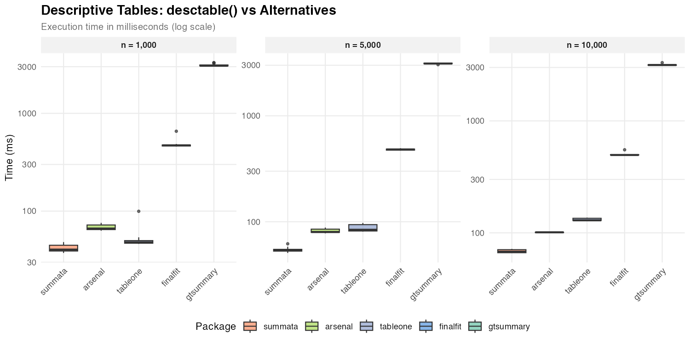
| Dataset Size | summata |
arsenal |
tableone |
finalfit |
gtsummary |
|---|---|---|---|---|---|
| n = 1,000 | 40 ms | 66 ms | 48 ms | 471 ms | 3,072 ms |
| n = 5,000 | 54 ms | 80 ms | 84 ms | 481 ms | 3,113 ms |
| n = 10,000 | 68 ms | 101 ms | 129 ms | 496 ms | 3,155 ms |
The observed timing differences reflect underlying implementation
choices. Packages built on data.table or base R matrix
operations (summata, tableone,
arsenal) exhibit lower overhead than those employing more
extensive formatting pipelines (gtsummary). The
gtsummary package prioritizes output flexibility and
gt integration, which introduces additional computational
cost.
Survival Tables
Survival probability tables summarize Kaplan-Meier estimates at specified time points.
| Package | Function | Notes |
|---|---|---|
summata |
survtable() |
Formatted output |
| manual | survival::survfit() |
Raw computation |
gtsummary |
tbl_survfit() |
gt integration |
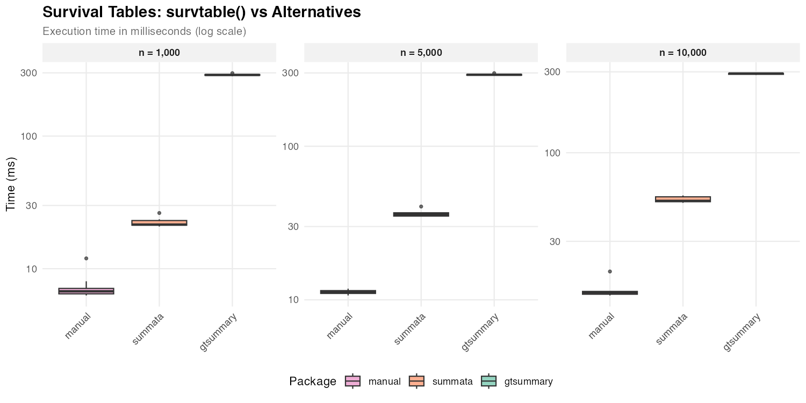
| Dataset Size | summata |
gtsummary |
manual |
|---|---|---|---|
| n = 1,000 | 22 ms | 289 ms | 7 ms |
| n = 5,000 | 36 ms | 292 ms | 11 ms |
| n = 10,000 | 52 ms | 293 ms | 15 ms |
Direct survfit() computation provides a baseline for the
minimum time required. The difference between raw computation and
formatted output reflects the cost of table construction and
presentation logic.
Regression Output
The following benchmarks compare functions that extract and format regression coefficients. Each package produces tables suitable for publication, though with varying levels of default formatting. Compared functions are as follows:
| Package | Function | Notes |
|---|---|---|
summata |
fit() |
Formatted output with counts and reference rows |
summata_minimal |
fit(..., show_n = FALSE, show_events = FALSE, reference_rows = FALSE) |
Reduced output |
finalfit |
glmuni() + fit2df()
|
Two-step extraction |
broom |
tidy() |
Minimal extraction |
gtsummary |
tbl_regression() |
gt formatting |
Logistic Regression
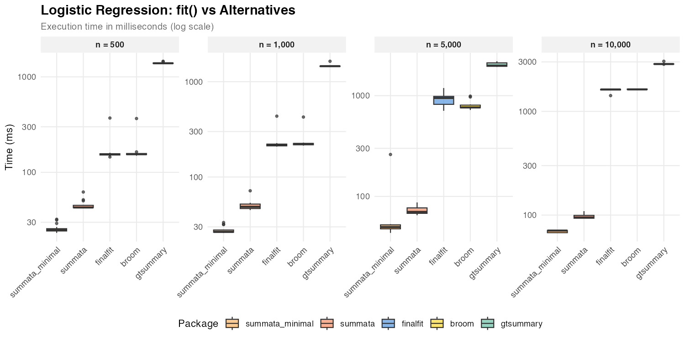
| Dataset Size | summata_minimal |
summata |
finalfit |
broom |
gtsummary |
|---|---|---|---|---|---|
| n = 500 | 25 ms | 43 ms | 155 ms | 155 ms | 1,388 ms |
| n = 1,000 | 27 ms | 49 ms | 219 ms | 222 ms | 1,454 ms |
| n = 5,000 | 50 ms | 70 ms | 949 ms | 765 ms | 1,986 ms |
| n = 10,000 | 71 ms | 95 ms | 1,626 ms | 1,629 ms | 2,861 ms |
Among tested packages, summata performs the fastest
summarization of logistic regression models. The
summata_minimal configuration, which omits sample size
counts and reference rows, provides additional speed at the cost of
less-complete output.
Linear Regression
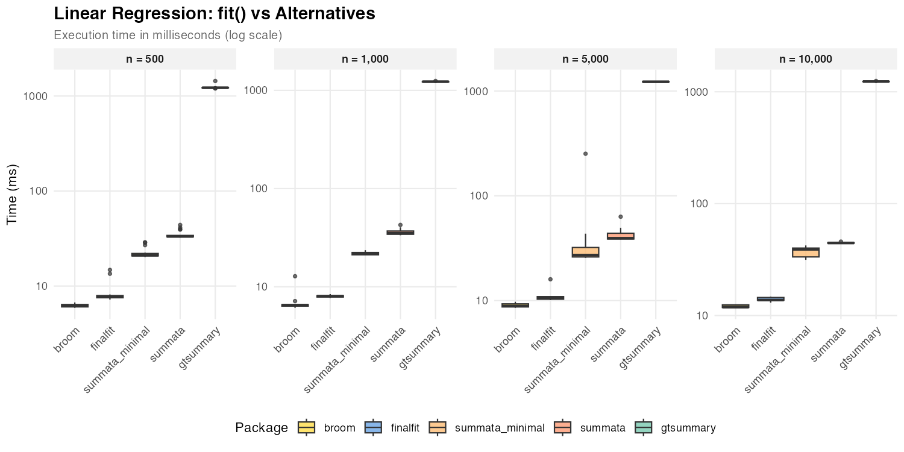
| Dataset Size | summata_minimal |
summata |
finalfit |
broom |
gtsummary |
|---|---|---|---|---|---|
| n = 500 | 21 ms | 33 ms | 8 ms | 6 ms | 1,222 ms |
| n = 1,000 | 22 ms | 35 ms | 8 ms | 7 ms | 1,225 ms |
| n = 5,000 | 27 ms | 39 ms | 11 ms | 9 ms | 1,228 ms |
| n = 10,000 | 39 ms | 45 ms | 14 ms | 12 ms | 1,234 ms |
For linear models, broom::tidy() and
finalfit achieve faster coefficient extraction due to the
simpler structure of lm objects. The summata
package applies additional formatting by default, accounting for the
difference.
Poisson Regression
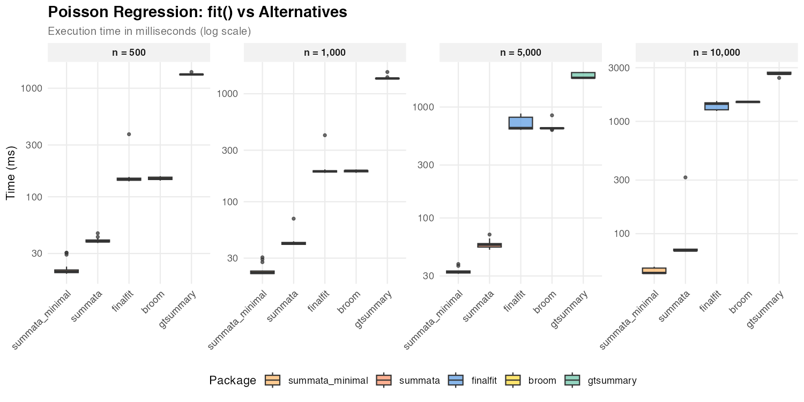
| Dataset Size | summata_minimal |
summata |
finalfit |
broom |
gtsummary |
|---|---|---|---|---|---|
| n = 500 | 20 ms | 39 ms | 144 ms | 147 ms | 1,341 ms |
| n = 1,000 | 22 ms | 41 ms | 191 ms | 193 ms | 1,386 ms |
| n = 5,000 | 33 ms | 57 ms | 646 ms | 643 ms | 1,832 ms |
| n = 10,000 | 45 ms | 71 ms | 1,433 ms | 1,491 ms | 2,644 ms |
Poisson regression exhibits similar patterns to logistic regression, with GLM-based extraction showing comparable relative performance across packages in low-n scenarios.
Cox Regression
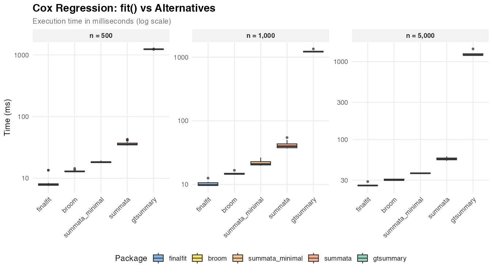
| Dataset Size | summata_minimal | summata | finalfit | broom | gtsummary |
|---|---|---|---|---|---|
| n = 500 | 18 ms | 35 ms | 8 ms | 13 ms | 1,241 ms |
| n = 1,000 | 21 ms | 40 ms | 10 ms | 15 ms | 1,222 ms |
| n = 5,000 | 37 ms | 56 ms | 26 ms | 30 ms | 1,213 ms |
Similar to linear regression, Cox model coefficient extraction is
fastest in finalfit and broom, when minimal
formatting is required; summata takes slightly longer due
to formatting overhead.
Mixed-Effects Models
Mixed-effects models present a useful comparison case because the
underlying model fitting (via lme4) dominates execution
time regardless of the wrapper package.
| Package | Function | Notes |
|---|---|---|
summata |
fit(..., model_type = "lmer") |
Unified interface |
summata_minimal |
fit(..., model_type = "lmer", show_n = FALSE, show_events = FALSE, reference_rows = FALSE) |
Reduced output |
finalfit |
lmmixed() + fit2df()
|
Two-step process |
broom.mixed |
tidy() |
Minimal extraction |
gtsummary |
tbl_regression() |
gt formatting |
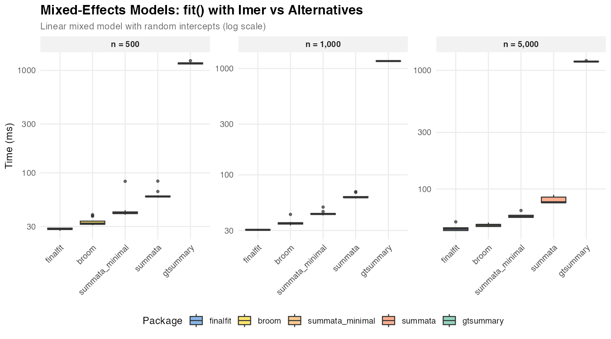
| Dataset Size | summata_minimal |
summata |
finalfit |
broom |
gtsummary |
|---|---|---|---|---|---|
| n = 500 | 41 ms | 59 ms | 28 ms | 32 ms | 1,174 ms |
| n = 1,000 | 43 ms | 62 ms | 30 ms | 35 ms | 1,174 ms |
| n = 5,000 | 58 ms | 77 ms | 46 ms | 50 ms | 1,187 ms |
The relatively narrow spread among summata,
finalfit, and broom reflects the dominance of
model fitting time. Differences in wrapper overhead become
proportionally less significant as the underlying computation grows.
Univariable Screening
Univariable screening—fitting separate models for each predictor—provides a test case for operations involving many repeated model fits.
| Package | Function | Notes |
|---|---|---|
summata |
uniscreen() |
Parallel-capable |
summata_minimal |
uniscreen(..., show_n = FALSE, show_events = FALSE, reference_rows = FALSE) |
Reduced output |
finalfit |
glmuni() + fit2df()
|
Sequential |
broom |
Loop + tidy()
|
Manual implementation |
arsenal |
modelsum() |
Formula interface |
gtsummary |
tbl_uvregression() |
gt formatting |
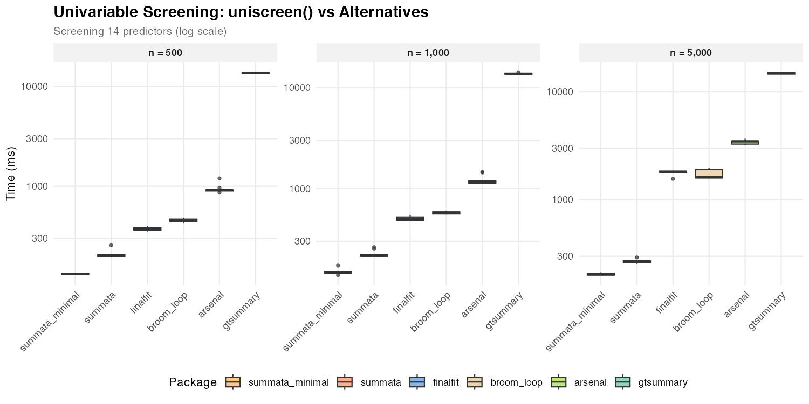
Screening 14 predictors:
| Dataset Size | summata_minimal |
summata |
finalfit |
broom |
arsenal |
gtsummary |
|---|---|---|---|---|---|---|
| n = 500 | 132 ms | 201 ms | 381 ms | 453 ms | 916 ms | 13,595 ms |
| n = 1,000 | 146 ms | 216 ms | 499 ms | 577 ms | 1,173 ms | 13,764 ms |
| n = 5,000 | 204 ms | 271 ms | 1,806 ms | 1,613 ms | 3,467 ms | 14,857 ms |
The performance differences in univariable screening are more
pronounced than in single-model extraction, as overhead compounds across
multiple model fits. The gtsummary timings reflect
extensive table formatting applied to each predictor.
Complete Workflow
The combined univariable screening and multivariable modeling workflow represents a common analytical pattern in statistical research.
| Package | Approach | Notes |
|---|---|---|
summata |
fullfit() |
Single function |
summata_minimal |
fullfit(..., show_n = FALSE, show_events = FALSE, reference_rows = FALSE) |
Reduced output |
finalfit |
finalfit() |
Single function |
| manual | Loop + glm() + broom::tidy()
+ rbind()
|
Custom |
gtsummary |
tbl_uvregression() +
tbl_regression() + tbl_merge()
|
Multi-step |
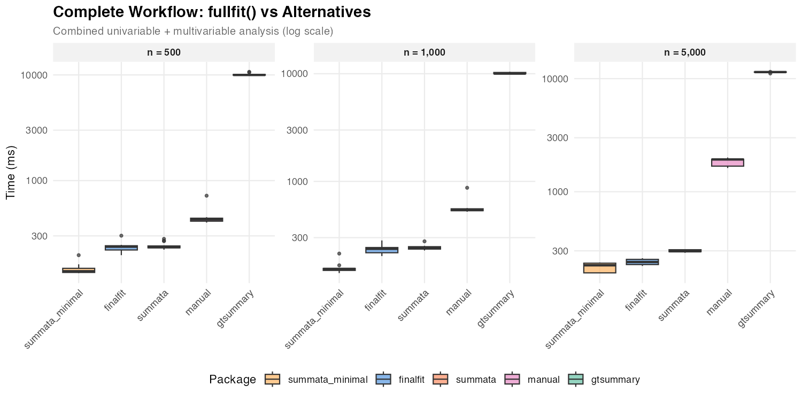
| Dataset Size | summata_minimal |
summata |
finalfit |
manual | gtsummary |
|---|---|---|---|---|---|
| n = 500 | 139 ms | 235 ms | 237 ms | 429 ms | 9,991 ms |
| n = 1,000 | 154 ms | 242 ms | 236 ms | 541 ms | 10,029 ms |
| n = 5,000 | 224 ms | 297 ms | 239 ms | 1,929 ms | 11,428 ms |
The summata and finalfit packages show
comparable performance for the complete workflow, reflecting their
similar design philosophies. Both packages optimize the combined
operation rather than simply chaining separate functions.
Forest Plots
Forest plot generation combines data extraction with graphical rendering.
| Package | Function | Notes |
|---|---|---|
summata |
coxforest() |
Integrated table and plot |
survminer |
ggforest() |
Survival-focused |
| manual | Custom ggplot2
|
Maximum flexibility |
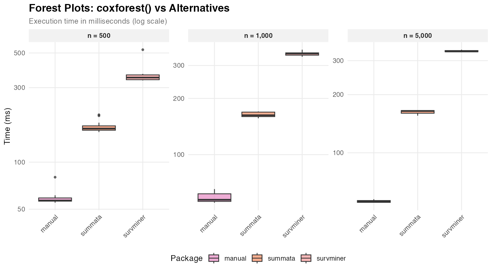
| Dataset Size | summata |
survminer |
manual |
|---|---|---|---|
| n = 500 | 164 ms | 348 ms | 57 ms |
| n = 1,000 | 163 ms | 348 ms | 57 ms |
| n = 5,000 | 164 ms | 335 ms | 56 ms |
The manual approach produces only the graphical element, while
summata and survminer generate integrated
displays with coefficient tables. The relatively constant timing across
dataset sizes indicates that plot rendering, rather than data
processing, dominates execution time. Also, there are significant
cosmetic differences between the three graphical outputs, which
predominates other factors when selecting a plotting function.
Relative Performance
The following figure summarizes timing ratios across benchmarks.
Values greater than 1 indicate the comparison package requires more time
than summata.
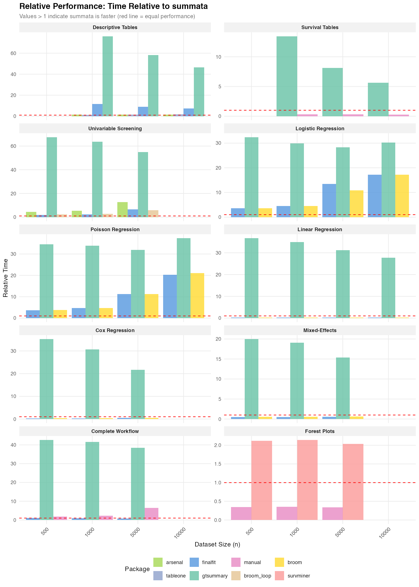
Summary of Ratios
| Benchmark | gtsummary |
finalfit |
arsenal |
|---|---|---|---|
| Descriptive Tables | 46–76× | 7–12× | 1.5–1.6× |
| Survival Tables | 6–13× | — | — |
| Logistic Regression | 29–32× | 4–17× | — |
| Poisson Regression | 32–37× | 4–20× | — |
| Linear Regression | 28–37× | 0.2–0.3× | — |
| Cox Regression | 22–35× | 0.2–0.5× | — |
| Mixed-Effects | 15–20× | 0.5–0.6× | — |
| Univariable Screening | 55–67× | 2–7× | 5–13× |
| Complete Workflow | 38–43× | 0.8–1.0× | — |
Ratios less than 1 indicate cases where the comparison package is
faster than summata. These occur primarily for simple
coefficient extraction from linear and Cox models, where
finalfit and broom apply less formatting
overhead.
Scaling Characteristics
The relationship between dataset size and execution time provides
insight into algorithmic complexity. Near-linear scaling (execution time
proportional to n) indicates efficient implementation, while
superlinear scaling may suggest operations with O(n²)
complexity, such as repeated rbind() calls or element-wise
data frame construction.
Observed scaling factors for summata (ratio of time at
n = 10,000 to time at n = 1,000):
| Operation | Scaling Factor | Expected for O(n) |
|---|---|---|
| Descriptive tables | 1.7× | 10× |
| Logistic regression | 1.9× | 10× |
| Univariable screening | 1.3× | 10× |
The sublinear scaling reflects that fixed overhead (package loading, object construction) constitutes a significant fraction of total time at smaller dataset sizes.
Implementation Notes
The performance characteristics documented here reflect specific implementation choices:
summata: Built on data.table for data
manipulation, with coefficient extraction optimized for common model
classes. Formatting is applied during extraction rather than as a
separate step.
gtsummary: Prioritizes output flexibility through
the gt table framework. The additional abstraction layers
enable extensive customization but increase computational overhead.
finalfit: Balances functionality and performance
with a tidyverse-compatible interface. The finalfit()
function is particularly optimized for the combined workflow.
arsenal: Uses formula-based syntax familiar to SAS users. Performance varies by operation type.
broom: Provides minimal coefficient extraction with limited formatting. Suitable as a building block for custom pipelines.
Effect of Output Options
By default, summata functions compute sample sizes,
event counts, and reference rows for categorical variables. These
features add computational overhead but produce more complete output for
publication. For performance-sensitive applications, these options can
be disabled.
The summata_minimal configuration shown in the
benchmarks generally represents:
fit(data, outcome, predictors,
show_n = FALSE,
show_events = FALSE,
reference_rows = FALSE)This configuration reduces execution time by approximately 25–40%
compared to default settings, producing output more comparable to
broom and finalfit. The choice between
configurations depends on the use-case:
- Publication tables: Default settings provide complete output ready for manuscripts
- Simulation studies: Minimal settings reduce per-iteration overhead
- Exploratory analysis: Either setting is appropriate depending on information needs
Practical Considerations
The timing differences documented here range from negligible (tens of milliseconds) to substantial (several seconds). The practical significance depends on context:
- Interactive analysis: Differences under 500 ms are generally imperceptible
- Batch processing: Cumulative differences matter when processing many datasets
- Simulation studies: Per-iteration overhead compounds across thousands of replicates
- Teaching and demonstration: Faster feedback loops improve the interactive experience
Package selection should primarily reflect functional requirements, syntax preferences, and ecosystem compatibility. Performance considerations become relevant only when computational constraints are binding.
Reproducibility
The benchmark script is available in the package repository at
inst/benchmarks/benchmarks.R. Execution produces:
- Individual PNG figures for each benchmark category
- Summary figures (
benchmark_speedup.png) - CSV files with detailed timing data
Results will vary across systems due to differences in hardware, R version, and package versions.
Session Information
This benchmark was run under the following conditions:
R version 4.5.2 (2025-10-31)
Platform: x86_64-unknown-linux-gnu
Matrix products: default
BLAS/LAPACK: /usr/lib/libopenblasp-r0.3.30.so; LAPACK version 3.12.0
Void Linux x86_64
Linux 6.12.63_1
Intel(R) Core(TM) i5-4670K (4) @ 3.80 GHz
NVIDIA GeForce GTX 970 [Discrete]